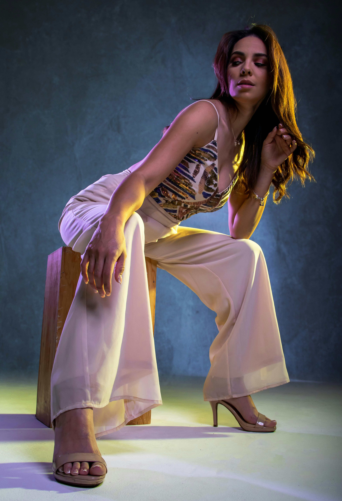
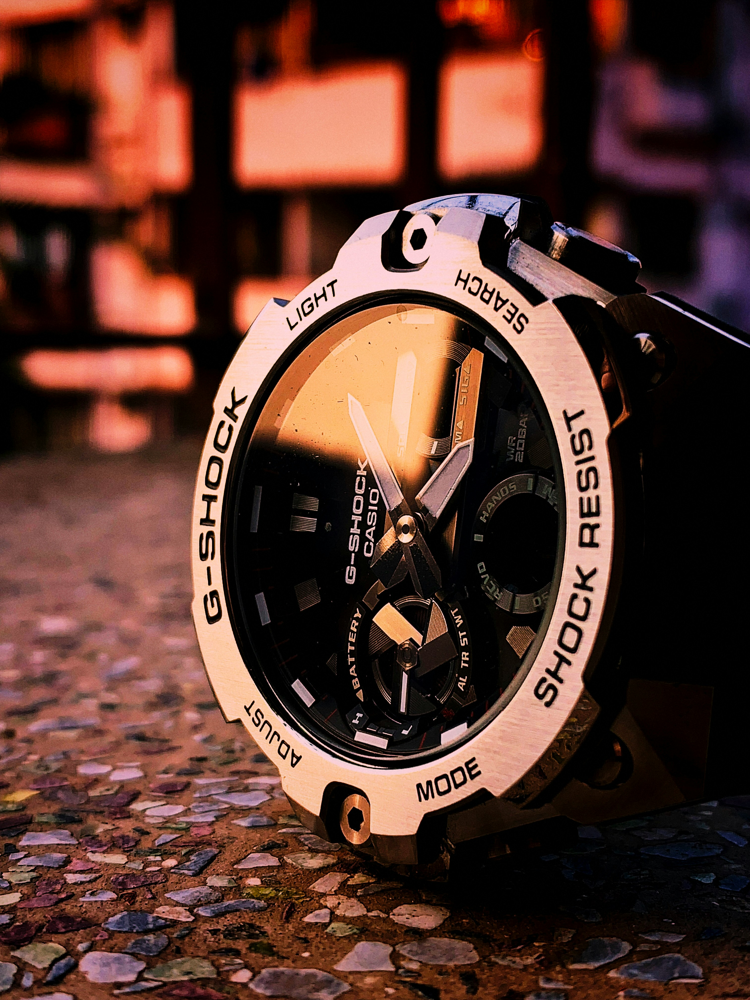
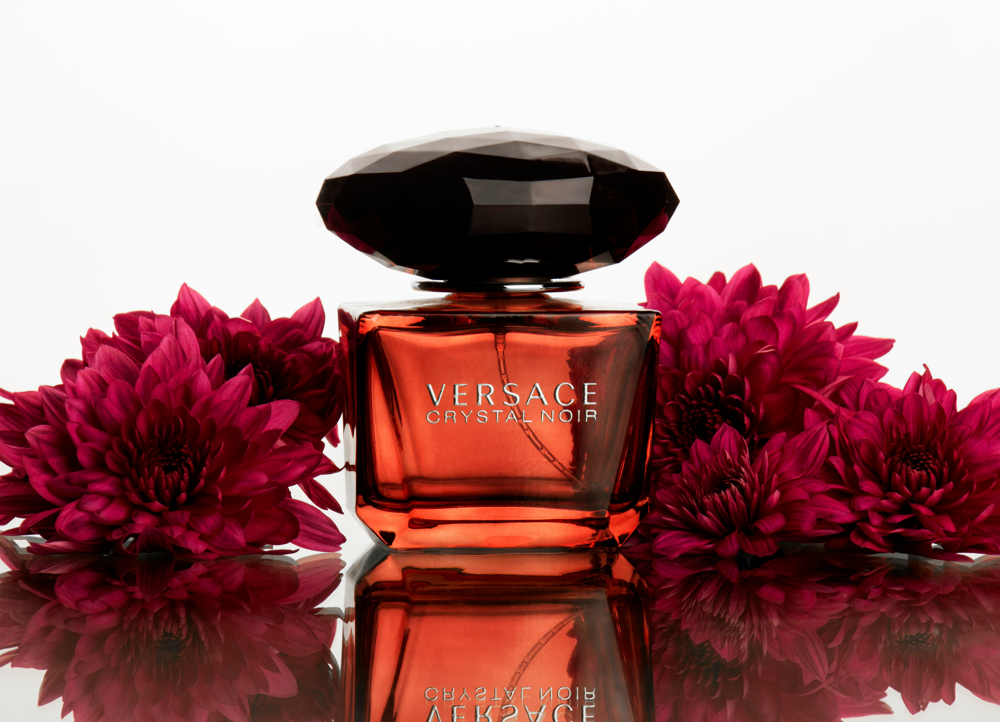

跳脫單純的軟體操作，聚焦於商業成效與專業產能極大化。
精通 Photoshop、Illustrator。專注於高階人像膚質精修、電商產品去背合成及情境主圖打造。熟知電商點擊率痛點，能透過精準的構圖與色彩平衡，提升消費者停留時間與轉換意願。
具備專業棚燈控光思維，熟練三點布光（主光、輔光、輪廓光）與反光板、柔光箱搭配，並使用專業測光錶精準掌控光比。擅長金屬與透明器皿的高反差反光壓制，以及企業主管、職人形象照拍攝。
具備罕見的 EDIUS + DaVinci Resolve 雙核心能力。EDIUS 提供電視台新聞級的高速多軌即時剪輯，專門應對緊急行銷短片需求；DaVinci Resolve 則運用節點調色建立品牌專屬 LUT 與影視級色調，兼具高產出速度與高視覺質感。
附上專案角色分工、技術重點與實戰解法，展現獨立作業與團隊協作能力。
【專案挑戰】素材拍攝量大且交件期極短，需在 90 秒內抓住受眾注意力並呈現品牌專業感。
【技術亮點】採用 EDIUS 廣播級高效剪輯引擎，利用即時多軌預覽快速梳理素材，精準踩準背景音樂鼓點與轉場，剪輯產能較一般流程提升 40% 以上。
【專案挑戰】多場景光源混亂（室內鎢絲燈與戶外日光），需確保全片膚色一致性並形塑高級電影感。
【技術亮點】運用 DaVinci Resolve 進行一級色彩校正與節點隔離，針對臉部膚色分離調控（Skin Tone Indicator 準確落點），打造具備故事張力的高質感風格化調色。
點擊圖片開啟高解析燈箱，檢視實例光影層次、面部毛孔細節與產品材質反光控制實力。


